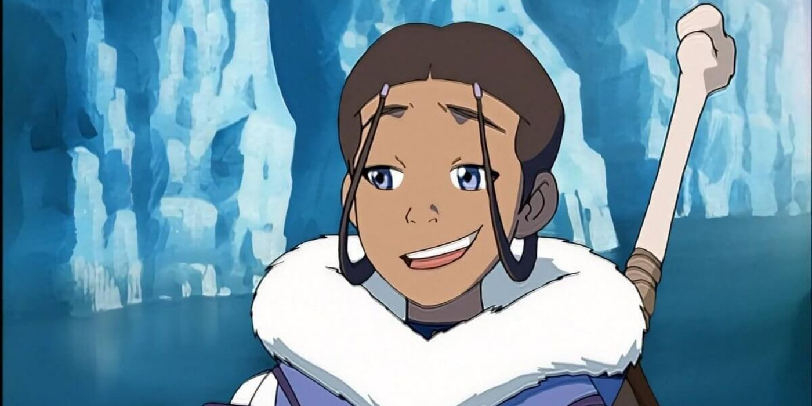
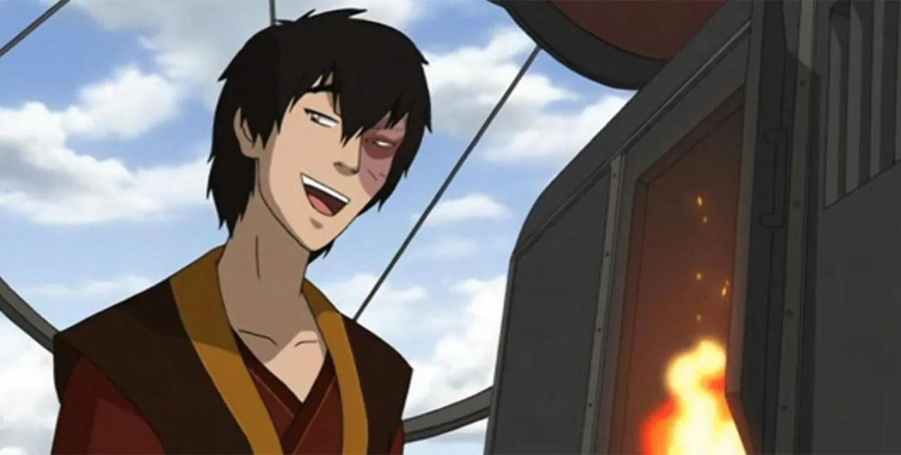
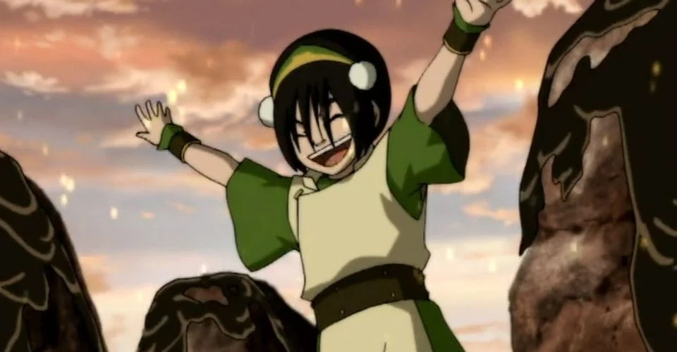

Katara
Katara es una maestra agua, nacida y criada en la Tribu Agua del Sur por su abuela, Kanna, junto a su hermano mayor Sokka, y es la hija del Jefe Hakoda y su esposa Kya. Durante su infancia, Katara fue una de la unica maestra agua que vivia en su tribu.
Zuko
El Señor del Fuego Zuko es un Maestro del Fuego Control con un corazon gigante y muy noble, nacido como Príncipe heredero de la Familia Real de la Nación del Fuego. Su historia a menudo fue paralela a la del Avatar Aang. Inicialmente, fue el principal enemigo del Equipo Avatar, la vida de Zuko giraba en torno a tratar de capturar al Avatar perdido hace mucho tiempo para poner fin a su exilio y recuperar su honor como el Príncipe heredero de la Nación del Fuego.
Toph
Toph Beifong es una Maestra de la Tierra Control y una de las más poderosas de su tiempo. Ciega de nacimiento, Toph fue tratada con condescendencia constantemente a causa de su discapacidad y estatura, en especial por sus padres sobreprotectores. Al descubrir a los tejones topo, animales capaces de hacer Tierra Control que también eran ciegos, aprendió a usar la Tierra Control como una extensión de sus sentidos. Esto le dio la capacidad de "ver" a través de toda pequeña vibración que ocurriera en el suelo.